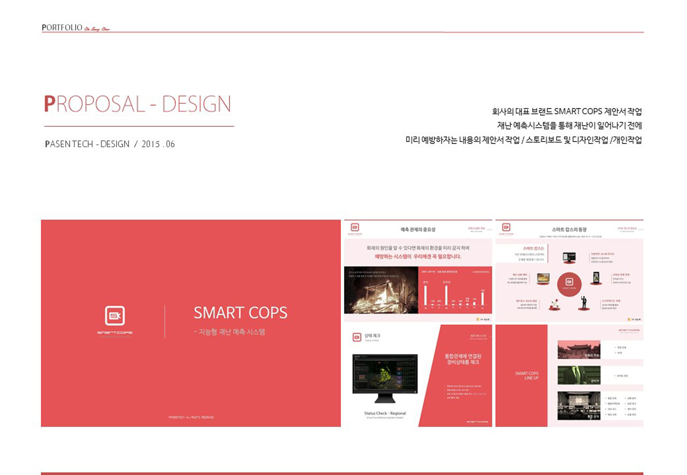

2017.09.21
Myanmar Bagan Temple Monitoring System

- Smartcops 제안서 -
" 한국 사례를 통해 미얀마 관계자들을 설득해야 한다. "
미얀마를 대표하는 파고다는 불심이 강한 미얀마 국민들의 염원을 담은 보석들이 많다.
최근 파고다가 해외 관광지로 큰 인기를 누리게 되면서 파고다를 지키기 위한 방재시스템이 필요했다.
그래서 그 사업에 Smart cops 시스템을 제안하는 기회가 생기게 되었다.
스마트 캅스의 기능을 기획하고 디자인한 내가 기획서를 담당하게 되었다.
우선 한국에서 설치된 사례를 선보여 운영 시나리오를 설명한다.
그리고 미얀마 바간 지역에 시스템을 도입한다는 가정하에 예상 시나리오를 소개하였다.
미얀마 관계자들에게는 무인 관제 시스템이라는 점에서 많은 호평을 받았다.
하지만 어떤 상황이든 문제점들은 잠재되어 있다.
그래서 문제점들을 미리 파악하기 위해 기획 단계에서 바간 지역에 Smart cops를 설치한다는 가상의 시뮬레이션을 생각해 보았다.
미얀마는 한국과 달리 인터넷 기반 시설이 좋지 못했다.
Web 기반의 시스템이라 주변 네트워크망에 대한 기반 시설이 매우 중요한 상황이었다.
그래서 실제 프로젝트를 진행할 경우를 어떤 시공방법을 선택할 것이며 현지 업체를 어떤 기준으로 선정할 것인지 기준 계획서 또한 준비하기도 하였다.
미얀마 기획서 보기
Smartcops 기획서 보기